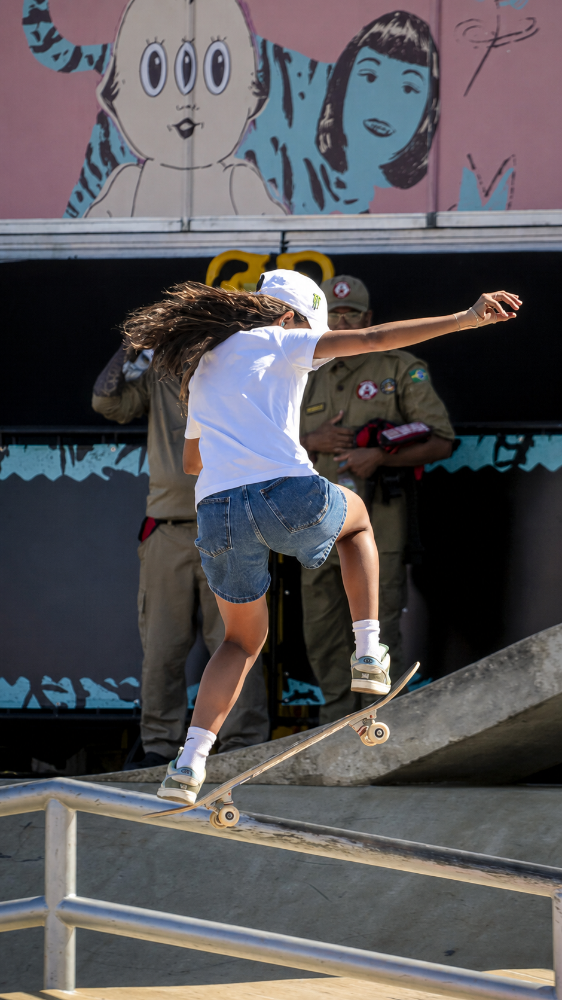

Foto original: Alex Rocha/PMPA; edição digital com IA.
Uso comercial e modificações permitidos com atribuição.
URL original: https://commons.wikimedia.org/wiki/File:IBPA_145493_-_Nesta_sexta-feira_(21),_foi_dada_a_largada_da_etapa_de_-_2025-03-21_-_Alex_Rocha-PMPA.jpg
O Rio de Janeiro receberá uma das etapas mais aguardadas da temporada 2026 da Street League Skateboarding. Marcado para 9 de agosto, o SLS Rio Takeover ocupará o Ginásio do Maracanãzinho com uma programação concentrada em um único dia, reunindo finais masculina e feminina, uma disputa de wildcard, treinos, sessão de autógrafos e experiências voltadas ao público.
O evento será a terceira parada do Championship Tour de 2026. A competição retorna à capital fluminense depois de o Rio receber o Super Crown de 2022, edição na qual Rayssa Leal conquistou seu primeiro título mundial da SLS. Desta vez, porém, a liga utilizará o formato Spot Takeover, que elimina as tradicionais voltas completas pela pista e concentra a pontuação em manobras individuais.
Chloe é um dos principais nomes do atual skate street feminino. Aos 16 anos, a australiana chegou a 2026 em forte momento competitivo e venceu as três etapas do formato Takeover das quais participou, em Los Angeles, Santa Monica e Cleveland. Na parada de Downtown Los Angeles de 2026, ela terminou com 22,9 pontos e superou Daniela Terol e Paige Heyn.
A lista ainda pode sofrer alterações por questões esportivas, médicas, disciplinares ou operacionais. Por isso, uma inclusão posterior de Chloe não pode ser completamente descartada, mas ela não integra o grupo oficialmente anunciado para a etapa carioca. A própria página de venda informa que a participação dos atletas permanece sujeita às condições da competição.
O formato Takeover
A principal diferença do evento em relação às etapas tradicionais da SLS está no formato. No Spot Takeover, os skatistas não realizam as duas voltas completas normalmente vistas nos eventos Arena Major. A disputa é baseada exclusivamente em manobras individuais, as best tricks.
Cada skatista terá sete tentativas no total. Todas recebem uma nota de zero a dez, mas apenas as três melhores pontuações entram na soma final. Assim, o máximo possível é de 30 pontos. Uma tentativa não completada recebe zero, mas o erro não elimina o atleta: ele ainda poderá utilizar as rodadas seguintes para construir sua pontuação.
Em caso de empate na soma das três melhores notas, o primeiro critério de desempate é a maior nota individual obtida pelo skatista. Esse sistema estimula os competidores a equilibrarem regularidade e dificuldade. Três manobras seguras podem produzir um resultado competitivo, mas uma nota muito alta pode decidir a classificação ou o título.
Skatistas nas finais
A final feminina está prevista com seis competidoras, todas já anunciadas pela organização. No masculino, oito atletas foram convidados diretamente e outras duas vagas serão ocupadas pelos classificados no Wildcard Jam, formando uma decisão com dez nomes.
O Wildcard Jam será disputado antes da final masculina. A dinâmica funciona como uma porta de entrada para skatistas que não estavam originalmente no grupo principal. As duas posições identificadas no elenco oficial como “Wildcard 1” e “Wildcard 2” serão preenchidas a partir dessa disputa.
Feminino confirmado:
- Rayssa Leal — Brasil
- Gabriela Mazetto — Brasil
- Daniela Terol — Espanha
- Funa Nakayama — Japão
- Momiji Nishiya — Japão
- Aoi Uemura — Japão
Rayssa Leal, aos 18 anos, disputará a primeira etapa da SLS no Rio desde que se tornou maior de idade. Ela retorna ao local de uma conquista especial, já que levantou na cidade o troféu do Super Crown de 2022.
Funa Nakayama carrega no currículo a medalha de bronze olímpica conquistada em Tóquio. Momiji Nishiya, campeã olímpica também em Tóquio.
Daniela Terol chega credenciada pelo segundo lugar conquistado no Takeover de Downtown Los Angeles.
Uma das ausências mais sentida está na australiana Chloe Covell, um dos principais nomes do atual skate street feminino. Aos 16 anos, ela chegou a 2026 em forte momento competitivo e venceu as três etapas do formato Takeover das quais participou, em Los Angeles, Santa Monica e Cleveland.
Masculino confirmado:
- Toa Sasaki — Japão
- Giovanni Vianna — Brasil
- Angelo Caro — Peru
- Filipe Mota — Brasil
- Julian Agliardi — Estados Unidos
- Felipe Gustavo — Brasil
- Cordano Russell — Canadá
- Ginwoo Onodera — Japão
- Wildcard 1 — a definir
- Wildcard 2 — a definir
Ginwoo Onodera será um dos grandes nomes da etapa. O japonês. aos 16 anos, vive um período de rápida ascensão. Na abertura da temporada de 2026, em Sydney, ele venceu justamente no dia em que fez aníversário e se tornou o primeiro skatista da história da Street League a receber notas iguais ou superiores a nove em todas as sete apresentações de uma final.
Entre os brasileiros, Giovanni Vianna reúne potência, criatividade e grande capacidade de executar manobras em corrimãos e obstáculos de maior risco. Filipe Mota representa uma geração mais jovem do skate nacional, enquanto Felipe Gustavo, aos 35 anos, leva ao Maracanãzinho a experiência de uma carreira construída no mais alto nível internacional.
O contraste entre as gerações é uma das atrações do evento. Felipe Gustavo nasceu em 1991, enquanto Ginwoo nasceu em 2010. Os dois estarão separados por quase duas décadas de idade, mas com a conexão entre as quatro rodinhas.
O 9 Club
Cada manobra recebe uma nota de zero a dez, considerando dificuldade, execução, estilo, risco, criatividade e utilização do obstáculo. Quando um skatista alcança 9,0 ou mais, ele entra no chamado 9 Club, uma das marcas mais valorizadas da SLS.
O termo também foi aproveitado na categoria premium de ingressos do evento, mas nasceu da pontuação esportiva. Ao longo da história da liga, nomes como Nyjah Huston transformaram o 9 Club em símbolo de excelência no skate street.
No formato do Rio, uma nota 9 pode ter peso ainda maior porque somente três resultados entram na soma. Um skatista que combine um 9,0 com duas notas na faixa de oito pontos já ultrapassa 25 pontos, marca normalmente capaz de colocá-lo diretamente na disputa pelo pódio.
Ingressos e como assistir
As entradas são comercializados em três categorias principais: Arquibancada, 9 Club e Experience. Os valores anunciados para o primeiro lote partiam de R$ 75 na Arquibancada, R$ 200 no 9 Club e R$ 300 no Experience. Como a venda é dividida por lotes, os preços podem aumentar de acordo com a disponibilidade.
As arquibancadas são divididas entre cadeiras superiores, intermediárias e inferiores. Os lugares não são numerados, e a ocupação ocorre por ordem de chegada dentro do setor adquirido. A organização também alerta que, devido à montagem da pista e aos obstáculos, alguns assentos podem ter visão parcial.
O ingresso 9 Club inclui assento com visão privilegiada, entrada antecipada para acompanhar o treino feminino, fila exclusiva e acesso ao piso da arena para ativações do evento. Os portadores dessa categoria poderão entrar a partir das 8h, uma hora antes da abertura geral dos portões.
A categoria Experience reúne todos os benefícios do 9 Club e acrescenta sessão de autógrafos com skatistas selecionados pela SLS e brindes exclusivos. A participação na sessão depende da disponibilidade dos atletas. O encontro está previsto para ocorrer entre 10h15 e 10h45.
A compra pode ser feita pelo site https://www.ticketmaster.com.br/event/sls-rio-takeover. Cada CPF pode adquirir até seis ingressos, dos quais no máximo dois podem ser de meia-entrada. Crianças de até três anos não precisam de ingresso, e a classificação indicativa do evento é livre. Menores devem estar acompanhados dos pais ou responsáveis legais e portar a documentação necessária.
Também haverá venda física na bilheteria Sul do Estádio Nilton Santos, de terça-feira a sábado, das 10h às 17h, salvo dias de jogos, eventos e feriados. Na semana da etapa, o Maracanãzinho terá bilheteria entre 6 e 8 de agosto, das 10h às 17h, além de atendimento no domingo conforme o funcionamento do evento.
Programação completa do SLS Rio Takeover
- 8h — entrada antecipada para clientes 9 Club e Experience
- 8h às 9h — treino feminino
- 9h — abertura geral dos portões
- 9h às 10h — treino da final masculina
- 10h às 11h — treino do Wildcard Jam masculino
- 10h15 às 10h45 — sessão de autógrafos para clientes Experience
- 11h às 11h15 — aquecimento feminino
- 11h15 às 12h — final feminina
- 12h às 12h15 — aquecimento do Wildcard Jam
- 12h15 às 13h — Wildcard Jam masculino
- 13h às 13h15 — aquecimento masculino
- 13h15 às 14h30 — final masculina
- 14h30 às 15h — cerimônia de premiação
Os horários poderão sofrer alterações por razões técnicas, esportivas, operacionais ou de segurança. A SLS também fará a transmissão online da competição pelo seu canal oficial no YouTube.
Com sete oportunidades e três resultados válidos, o Rio Takeover será uma competição de alto nível técnico, com os skatistas mostrando as manobras que geralmente não aplicam nas voltas. Rayssa Leal terá o apoio da torcida brasileira, Ginwoo Onodera chega como um dos jovens mais técnicos do circuito e os brasileiros Giovanni Vianna, Filipe Mota e Felipe Gustavo ampliam as chances de um pódio nacional.